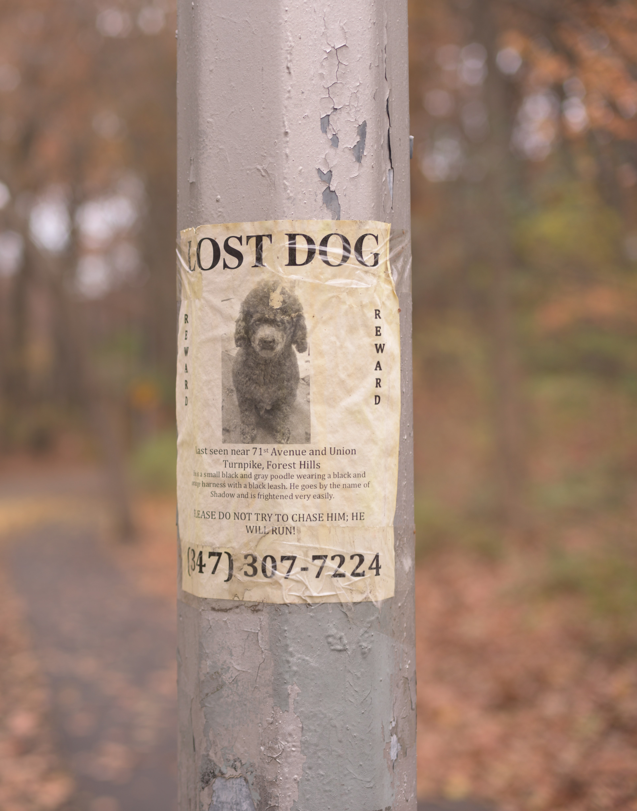

CRITTER CONNECTIONS
of Fairmount Philadelphia
Connect
Local Resources
Pet Friendly Places
Pet Care Services
Local Shelters
Medical
Lost & Found
Lost and Found
 Browse Lost Pets
Report Lost Pet
Browse Found Pets
Report Found Pet
 Browse Found Pets
Browse Found Pets